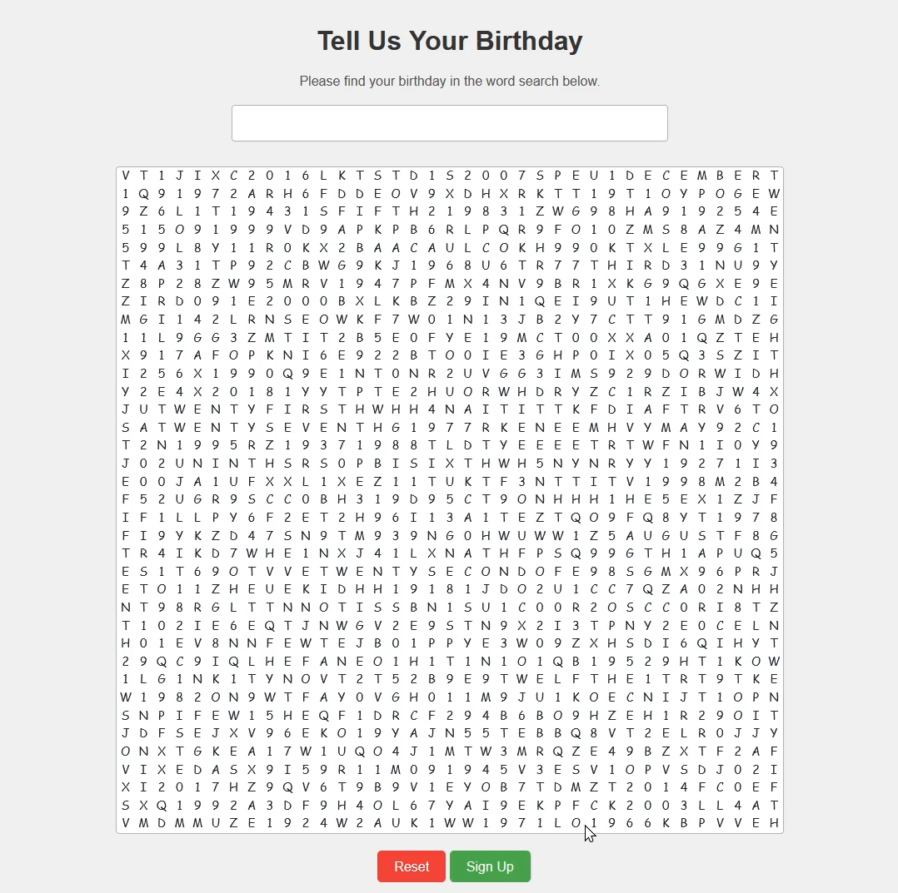

Screenshot
Figure 1. A spectacularly painful interface.
What I’d Improve
- Hierarchy: use size, weight, spacing to guide the eye.
- Contrast: accessible palette (AA+), consistent accent color.
- Layout: grid, alignment, breathing room.
- Type: 1–2 fonts, 3–4 sizes, readable line-height.
- Affordance: obvious buttons; clear hover/focus states.
Demo JS
Loading…